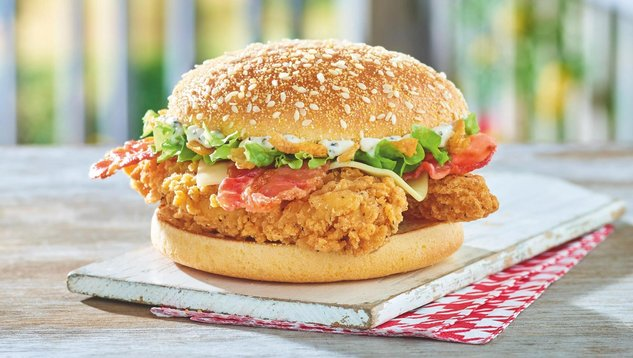

Cenk's Tavuk Burger

The Dish:
Okay, admittedly this one is not very Turkish at all. But this is Cenk's Recipes and not Turkish recipes for a reason! The story for this is simple. I ordered in some chicken burgers from -famous chicken chain #2- and they were absolute dogshit. I was so disillusioned I said to myself 'I can make a better version.' and I was motivated, because my chicken burger craving wasn't sated at all. Cutting to the chase, here's...
What You'll Need
- 800 grams of chicken breast
- 120 grams (about a bit more than half a glass of water) of galeta flour (fine breadcrumbs for the coating)
- 400mL of olive oil
- 200 grams of plain cereal (for the coating)
- White flour (for coating)
- A pinch of white flour
- 2 eggs
- 2 tablespoons of milk
- Salt
- Cumin
- Black pepper
- Turmeric
- 1 clove of garlic
And here's...
The Recipe
- Chop the chicken breast into small cubes.
- Put the chopped chicken into a food processor with the spices of your choice.
- Add the pinch of white flour and process again. Put the outcome in a separate bowl.
- Into another separate bowl, crack the two eggs, salt them and add the two tablespoons of milk. Mix well.
- Prepare yet another separate bowl and put white flour into it. This is for coating the chicken.
- Put about 120mL of fine breadcrumbs and 200mL of plain cereal into the processor and process it well, then prepare one final bowl and put the plain cereal and fine breadcrumbs mix into it also for coating.
- Line up these bowls to get ready for the process. Put the olive oil into a pan and get it hot.
- Wet your hand each time you do this. Grab a piece of the chicken the size of your choosing and shape it however you wish on a flat surface. You can use a jar lid to make it into a circle patty.
- If you haven't yet, line the bowls up in this order and coat the shaped chicken patty in this order: First, coat with plain white flour, then the egg mix, then lastly the fine breadcrumb and plain cereal mix.
- Toss it into the hot oil, fry each side by flipping the patty.
- Repeat as many times as you want or until you run out of the chicken mix.
- You can eat it as is, or make a burger.
- For the burger, I used burger buns, a bed of fresh lettuce, onions on top, ketchup and mayo mix, then the patty and pickles.
- Store the frying oil in a jar after everything's done.